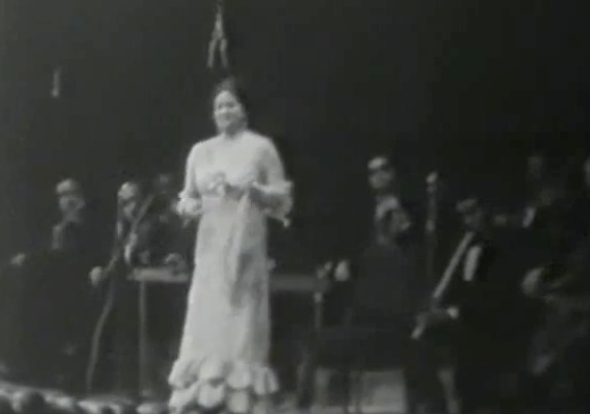

still from Um Kulthoum's concert in Morocco
I heard in a documentary that there were about 47 variations in this
© 2012 Ismail Fayed. All rights reserved.
• Published on: Friday 11 January 2013

still from Um Kulthoum's concert in Morocco
I heard in a documentary that there were about 47 variations in this
© 2012 Ismail Fayed. All rights reserved.